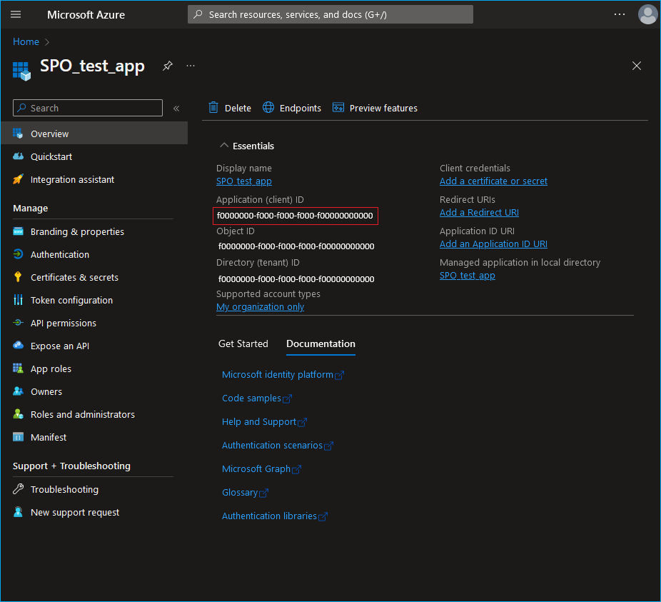

Symptoms
-
The following error is prompted in Health Log for your SharePoint Online or Microsoft Teams monitoring plan:
Source:SharePoint Online Audit Service Event ID:3205 Description:Monitoring plan: %monitoring_plan_name% Item: %name% The following unexpected error occurred: Cannot find the application.
-
The State-in-Time data is not collected.
Causes
-
Incorrect Application ID provided for the affected item in the monitoring plan.
-
Misconfigured API permissions for the corresponding Azure app.
Resolutions
-
Review the Application ID provided. You can find the Application ID of your app in the Overview page once you select the app in the App registrations section. Refer to the following article for additional information on the initial Azure app setup: Permissions for SharePoint Online Auditing − Creating and registering a new app in Microsoft Entra ID ⸱ v10.6. For additional information on creating an app for Teams auditing, refer to the following article: Permissions for Teams Auditing − Create and Register a New App in Microsoft Entra ID ⸱ v10.6.
 -
Review the app API permissions granted. You can either specify API permissions manually or use a manifest. Refer to the following article for additional information on granting permissions: Permissions for SharePoint Online Auditing − Granting required permissions ⸱ v10.6. For additional information on permissions for Teams auditing, refer to the following article: Permissions for Teams Auditing − Grant Required Permissions ⸱ v10.6.